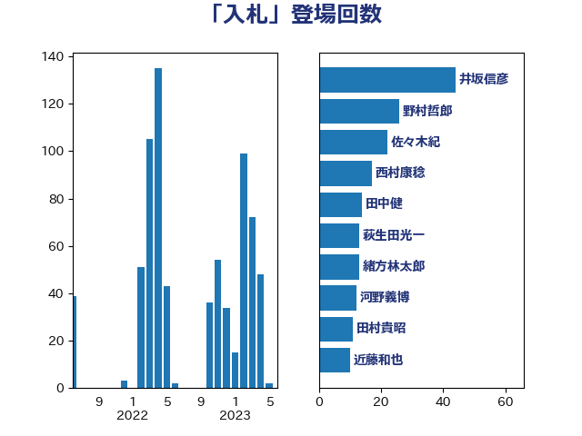

単語「入札」

| 井坂信彦 | 立憲民主党 | 44 回 |
| 野村哲郎 | 自由民主党 | 26 回 |
| 佐々木紀 | 自由民主党 | 22 回 |
| 西村康稔 | 自由民主党 | 17 回 |
| 田中健 | 国民民主党 | 14 回 |
| 萩生田光一 | 自由民主党 | 13 回 |
| 緒方林太郎 | 無所属 | 13 回 |
| 河野義博 | 公明党 | 12 回 |
| 田村貴昭 | 日本共産党 | 11 回 |
| 近藤和也 | 立憲民主党 | 10 回 |
| 神津たけし | 立憲民主党 | 10 回 |
| 倉林明子 | 日本共産党 | 10 回 |
| 牧島かれん | 自由民主党 | 9 回 |
| 源馬謙太郎 | 立憲民主党 | 9 回 |
| 石川香織 | 立憲民主党 | 8 回 |
| 斉藤鉄夫 | 公明党 | 8 回 |
| 田村憲久 | 自由民主党 | 7 回 |
| 田島麻衣子 | 立憲民主党 | 7 回 |
| 永岡桂子 | 自由民主党 | 7 回 |
| 松本剛明 | 自由民主党 | 7 回 |
| 東徹 | 日本維新の会 | 7 回 |
| 足立敏之 | 自由民主党 | 6 回 |
| 石垣のりこ | 立憲民主党 | 6 回 |
| 河野太郎 | 自由民主党 | 6 回 |
| 徳永エリ | 立憲民主党 | 6 回 |
| 川田龍平 | 立憲民主党 | 6 回 |
| 岸田文雄 | 自由民主党 | 6 回 |
| 鈴木俊一 | 自由民主党 | 5 回 |
| 竹詰仁 | 国民民主党 | 5 回 |
| 野中厚 | 自由民主党 | 4 回 |
| 道下大樹 | 立憲民主党 | 4 回 |
| 秋本真利 | 自由民主党 | 4 回 |
| 浜野喜史 | 国民民主党 | 4 回 |
| 浜田聡 | NHK党 | 4 回 |
| 杉本和巳 | 日本維新の会 | 4 回 |
| 大串博志 | 立憲民主党 | 4 回 |
| 塩川鉄也 | 日本共産党 | 4 回 |
| 吉川元 | 立憲民主党 | 4 回 |
| 鈴木憲和 | 自由民主党 | 3 回 |
| 野田国義 | 立憲民主党 | 3 回 |
| 芳賀道也 | 国民民主党 | 3 回 |
| 福島伸享 | 無所属 | 3 回 |
| 湯原俊二 | 立憲民主党 | 3 回 |
| 浜地雅一 | 公明党 | 3 回 |
| 櫻井周 | 立憲民主党 | 3 回 |
| 新垣邦男 | 立憲民主党 | 3 回 |
| 後藤茂之 | 自由民主党 | 3 回 |
| 寺田稔 | 自由民主党 | 3 回 |
| 大島敦 | 立憲民主党 | 3 回 |
| 北神圭朗 | 無所属 | 3 回 |
| 伊藤孝恵 | 国民民主党 | 3 回 |
| 仁木博文 | 無所属 | 3 回 |
| 井林辰憲 | 自由民主党 | 3 回 |
| 一谷勇一郎 | 日本維新の会 | 3 回 |
| 鳩山二郎 | 自由民主党 | 2 回 |
| 鬼木誠 | 立憲民主党 | 2 回 |
| 高橋光男 | 公明党 | 2 回 |
| 馬淵澄夫 | 立憲民主党 | 2 回 |
| 音喜多駿 | 日本維新の会 | 2 回 |
| 阿部司 | 日本維新の会 | 2 回 |
| 足立康史 | 日本維新の会 | 2 回 |
| 若宮健嗣 | 自由民主党 | 2 回 |
| 舟山康江 | 国民民主党 | 2 回 |
| 紙智子 | 日本共産党 | 2 回 |
| 篠原孝 | 立憲民主党 | 2 回 |
| 笠井亮 | 日本共産党 | 2 回 |
| 田畑裕明 | 自由民主党 | 2 回 |
| 渡辺猛之 | 自由民主党 | 2 回 |
| 森山浩行 | 立憲民主党 | 2 回 |
| 柚木道義 | 立憲民主党 | 2 回 |
| 本村伸子 | 日本共産党 | 2 回 |
| 末松信介 | 自由民主党 | 2 回 |
| 山岸一生 | 立憲民主党 | 2 回 |
| 小池晃 | 日本共産党 | 2 回 |
| 小宮山泰子 | 立憲民主党 | 2 回 |
| 中川宏昌 | 公明党 | 2 回 |
| 上田清司 | 国民民主党 | 2 回 |
| 高見康裕 | 自由民主党 | 1 回 |
| 高木啓 | 自由民主党 | 1 回 |
| 青柳仁士 | 日本維新の会 | 1 回 |
| 長浜博行 | 無所属 | 1 回 |
| 鈴木義弘 | 国民民主党 | 1 回 |
| 野間健 | 立憲民主党 | 1 回 |
| 里見隆治 | 公明党 | 1 回 |
| 西野太亮 | 自由民主党 | 1 回 |
| 西岡秀子 | 国民民主党 | 1 回 |
| 茂木敏充 | 自由民主党 | 1 回 |
| 窪田哲也 | 公明党 | 1 回 |
| 神谷裕 | 立憲民主党 | 1 回 |
| 石井章 | 日本維新の会 | 1 回 |
| 片山大介 | 日本維新の会 | 1 回 |
| 滝波宏文 | 自由民主党 | 1 回 |
| 渡辺周 | 立憲民主党 | 1 回 |
| 清水貴之 | 日本維新の会 | 1 回 |
| 沢田良 | 日本維新の会 | 1 回 |
| 森田俊和 | 立憲民主党 | 1 回 |
| 松沢成文 | 日本維新の会 | 1 回 |
| 杉尾秀哉 | 立憲民主党 | 1 回 |
| 本庄知史 | 立憲民主党 | 1 回 |
| 平木大作 | 公明党 | 1 回 |
| 岩田和親 | 自由民主党 | 1 回 |
| 山崎正恭 | 公明党 | 1 回 |
| 山下芳生 | 日本共産党 | 1 回 |
| 尾身朝子 | 自由民主党 | 1 回 |
| 小野泰輔 | 日本維新の会 | 1 回 |
| 宮路拓馬 | 自由民主党 | 1 回 |
| 宮本岳志 | 日本共産党 | 1 回 |
| 宗清皇一 | 自由民主党 | 1 回 |
| 安江伸夫 | 公明党 | 1 回 |
| 嘉田由紀子 | 無所属 | 1 回 |
| 加田裕之 | 自由民主党 | 1 回 |
| 前川清成 | 日本維新の会 | 1 回 |
| 保岡宏武 | 自由民主党 | 1 回 |
| 中村裕之 | 自由民主党 | 1 回 |
| 中山展宏 | 自由民主党 | 1 回 |
| 中司宏 | 日本維新の会 | 1 回 |
| たがや亮 | れいわ新選組 | 1 回 |